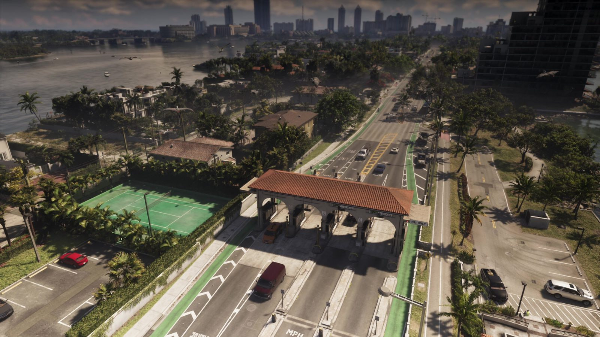
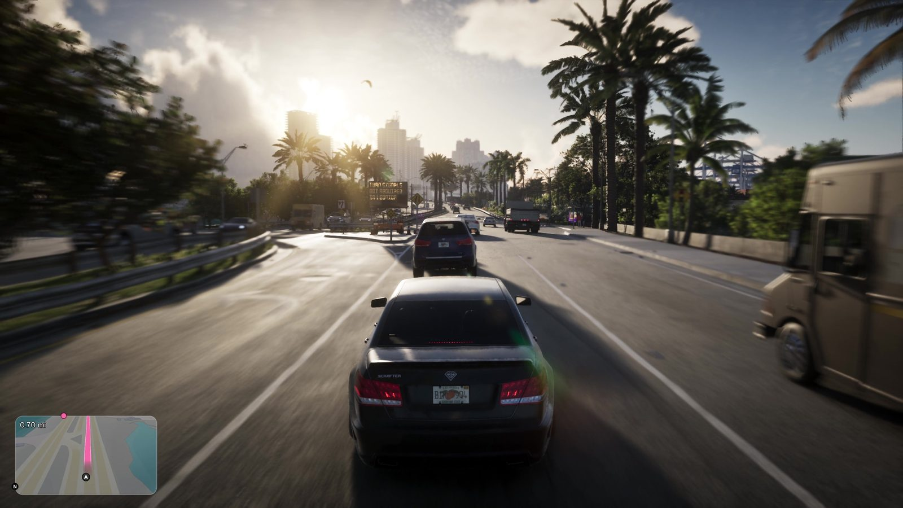

Погода в GTA 5 и GTA 6: от смога Лос-Сантоса к флоридским штормам
Обновлено:

- GTA 5: ясно, облака, смог, туман, дождь, гроза, снег только в праздники.
- GTA 6: «продвинутая система погоды» по мотивам Флориды (Game Informer №382).
- Ураган в серии уже был — в 2002 году, в Vice City. Но только в радионовостях.
- Релиз 19 ноября приходится на последние дни сезона ураганов во Флориде.
Как было в GTA 5
В Лос-Сантосе погода меняется сама по себе: ясно, облачно, пасмурно, смог над городом, туман, дождь от мороси до ливня и гроза. Прохожие прячутся от дождя, а банды реже выходят на улицы. Снег в Сан-Андреасе выпадает только в конце декабря, на праздничных событиях GTA Online. В сюжете снег есть в прологе, в Северном Янктоне. В режиме «Режиссёр» погоду можно выбрать вручную.
Главное: в GTA 5 погода — это настроение, а не событие. Дождь делает дорогу мокрой, гроза красиво освещает небо, но ничего не ломает и планы не срывает.
Погода в истории серии
Первый ураган в GTA появился ещё в Vice City 2002 года, только его никто не видел. В начале игры мосты между островами закрыты, и радионовости объясняют почему: к городу идёт ураган «Гермиона». Rockstar превратила погоду в сюжетный повод ограничить карту. Через 24 года студия возвращается в тот же город, и теперь погоду обещают по-настоящему.
- Vice City (2002) — капли дождя на экране, как будто камера мокнет. Ураган только в новостях.
- San Andreas (2004) — самая разнообразная погода серии: песчаные бури в пустыне, смог в Лос-Сантосе. Дождь отмывает машину от грязи.
- GTA IV (2008) — несколько видов дождя, прохожие реагируют на ливень и ищут укрытие.
- GTA V (2013) — плавные переходы, смог, гроза, праздничный снег.
Что известно о GTA 6
В анонсе номера №382 Game Informer пишет о «продвинутой системе погоды, которая воспроизводит не самые солнечные погодные явления Флориды». До этого о «динамической погоде» знали по вакансиям Rockstar (в них упоминались «масштабные разрушения») и по описанию на Amazon. Какие именно явления будут в игре, пока не раскрыто.
В «Расширенном показе» дождя и шторма нет: все 26 минут солнце, закаты и ясные ночи. Значит, всё, что известно о непогоде в GTA 6, пока известно только из текста.

Настоящая погода Флориды
Почему «не самые солнечные явления» — это обещание, а не мелочь:
- Сезон ураганов в Атлантике длится с 1 июня по 30 ноября. Релиз GTA 6, 19 ноября, попадает в его последние дни.
- Грозы. Флорида — самый «грозовой» штат США. Летом над Майами почти каждый день после обеда собирается ливень, а через час снова светит солнце.
- Холод. Раз в несколько зим в Южную Флориду приходит резкое похолодание. Что при этом происходит с местными ящерицами, мы рассказали в статье Животные в GTA 6: кто живёт в Леониде.
- Ураганы у побережья. Как ураган «Майкл» стёр целый городок — в статье Port Gellhorn в GTA 6: забытое побережье Леониды.
Послеобеденный ливень накрывает Вайс-Сити за пять минут. Асфальт блестит, прохожие бегут под навесы, дворники не справляются. Ты стоишь на светофоре и понимаешь, что погоня по мокрой дороге будет совсем другой. Через полчаса солнце, пар от асфальта и радуга над заливом.
Было — стало
| GTA 5 | GTA 6 | |
|---|---|---|
| Типы погоды | Ясно, облака, смог, туман, дождь, гроза, праздничный снег | Подтверждена «продвинутая» система, список не раскрыт |
| Прототип | Южная Калифорния: сухо, смог | Флорида: влажность, грозы, штормы |
| Экстремальные явления | Нет | Ураганы — 🟡 не подтверждены (Слух: в GTA 6 потратили $300 млн на воду — с ураганами и сёрфингом) |
| Реакция прохожих | Прячутся от дождя | Пока не показано |
| Где увидеть | Видно сразу | Узнаем из Game Informer и после релиза |
Что это значит для игрока
В GTA 5 погода была декорацией. В GTA 6 Rockstar специально подчёркивает непогоду Флориды, и само это слово в анонсе говорит о многом: студия гордится именно плохой погодой, а не солнцем. Если шторм будет влиять на дороги, полицию и видимость, одна и та же миссия будет проходиться по-разному. Пока это ожидание, а не факт. Подробности обещает номер Game Informer, обновим сравнение, как только он выйдет. Прошлое сравнение — Оружие и снаряжение в GTA 5 и GTA 6: карманы без дна закончились.
Источники: Game Informer (анонс №382); Dexerto, TweakTown (28.09.2026); GTA Wiki (погода в GTA Vice City, San Andreas, IV, V); NOAA (сезон ураганов).